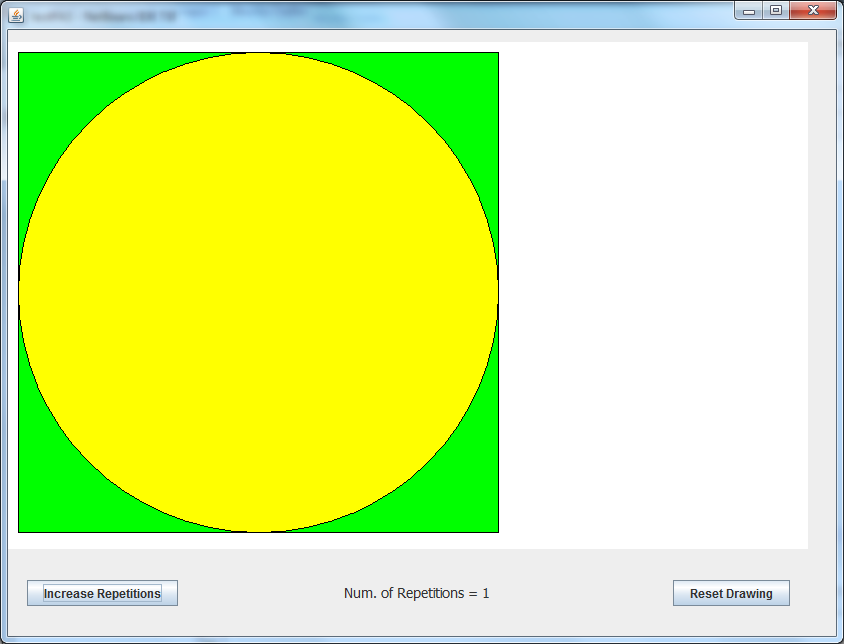
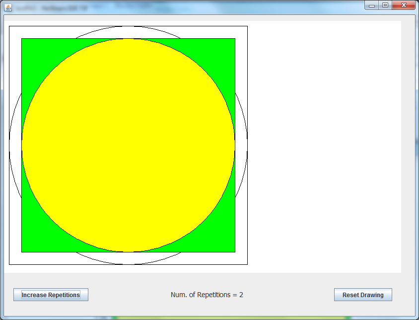
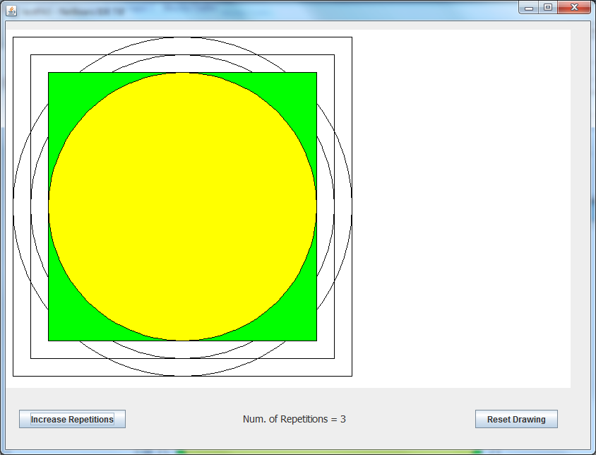
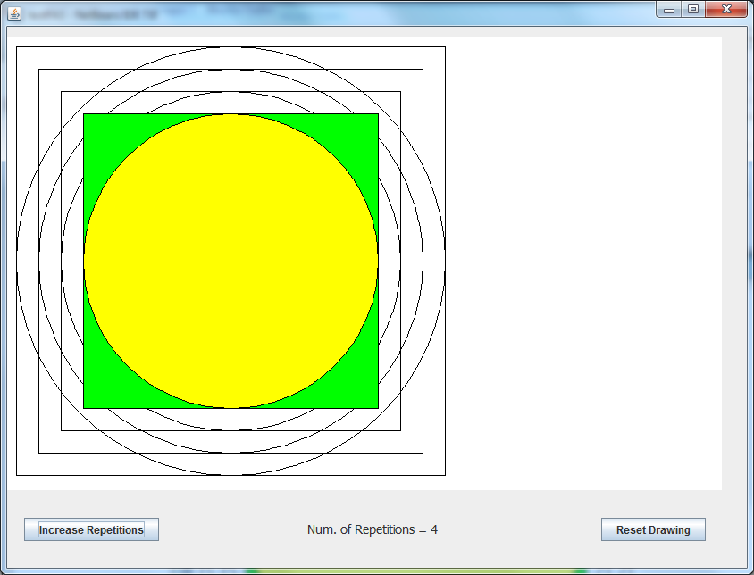
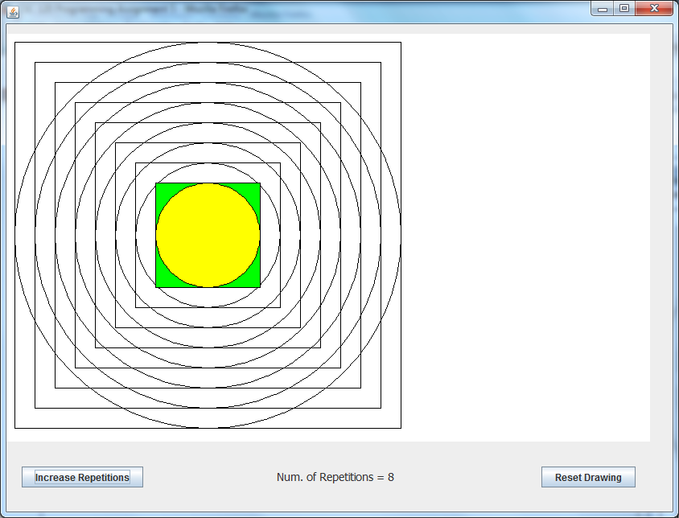

These thumbnail images show what your program should look like at specific points when it is run. Click on each thumbnail to expand the image.

When program first starts
(this is also what the screen should look like after the "Reset" button is clicked)
After the "Increase Repetitions" button has been clicked once
After the "Increase Repetitions" button has been clicked twice
After the "Increase Repetitions" button has been clicked three times
(notice that only the last oval and rect are filled -- all the previous ovals and rects use draw, not fill!)and so on, and so on, until ... 
After the "Increase Repetitions" button has been clicked seven times